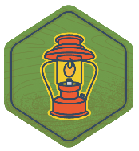
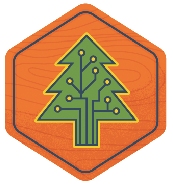

At BarCamp, you don't have to be an expert to give a talk
You just have to be passionate. At BarCamp, you won't find a predetermined speaker list or a line of suits passing out business cards. What you will find is some shaggy dude in a t-shirt talking about the best practices in SEO, or a world traveler sharing their experiences. BarCamp is a chance to nerwork, learn something new, and communicate what you're most passionate about. Come one, come all.
Talks are organized into one of four speaking categories. Some possible talks may include:
Entrepreneur

Creative

Technology

Kitchen Sink